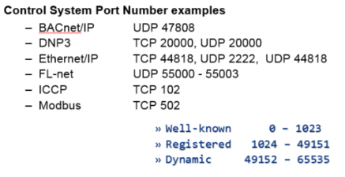

Protocols
rotocols
Many protocols are available and used in ICSs, most of which are proprietary or they are designed by a company to work with their products.
Examples: ANSI X3.28, BBC 7200, CDC Types 1 and 2, Conitel 2020/2000/3000, DCP1,
DNP 3.0, Gedac 7020,
ICCP, Landis & Gyr 8979,
Mondbus,
OPC(a standard not technically a protocol), ControlNet, DeviceNet, DH+, ProfiBus, Tejas 3 and 5, TRW 9550, UCA
Ports*IP mean in this case Industrial Protocol not Internet Protocol